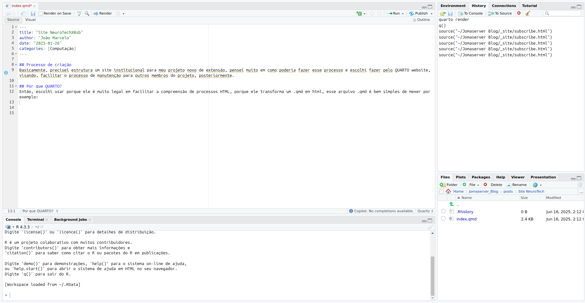
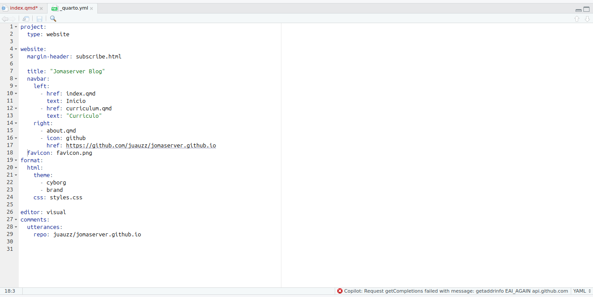

Basicamente, precisei estrutura um site institucional para meu projeto novo de extensão, pensei muito em como poderia fazer esse processo e escolhi fazer pelo QUARTO website, visando, facilitar o processo de manutenção para outros membros do projeto, posteriormente.
Então, escolhi usar porque ele é muito legal em facilitar a compreensão de processos HTML, porque ele transforma um .qmd em html, esse arquivo .qmd é bem simples de mexer por exemplo:

Esse é um arquivo .qmd que basicamente só precisa de um cabeçalho. E o resto parece bastante um editor de texto normal, claro que com algumas regrinhas a mais porém, simples e tranquilas de aprender.
Agora para detalhes um poucos mais técnicos, estruturei o site, com um arquivo .yml que é como se fosse a raiz de tudo mostrando os caminhos e acessos que nosso site vai ter.
Exemplo de arquivo .yml:

Além desse arquivo, tem um arquivo .qmd para cada um dos acessos, ou seja das paginas que vão estar no nosso menu. Também adicionei um .css externo que isso aí é um pouquinho mais dificil e exige um conhecimento de front-end. MAASSSS, isso é só um detalhe, tive que seguir fontes e cores que demandam a empresa.
Foi tranquilo a construção e imagino que seja tranquilo para a manutenção futura também. Vão lá dar uma olhada no site e lembre que recomendações são sempre bem-vindas.